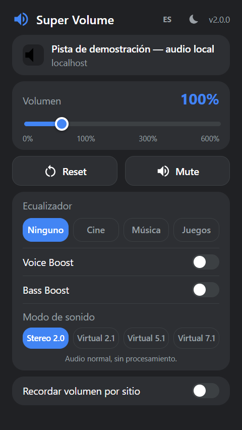
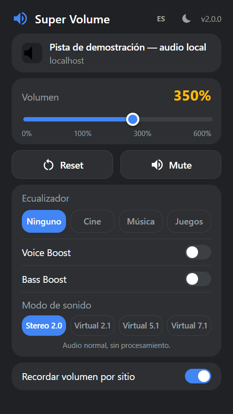
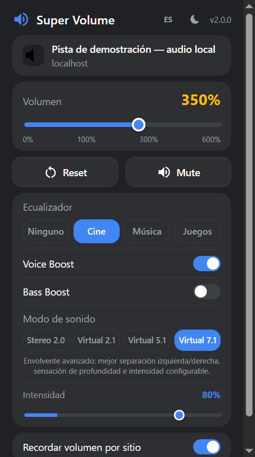

Amplificación hasta 600%
Slider de 0 a 600% en pasos de 5. Los cambios usan setTargetAtTime para evitar chasquidos al arrastrar.
Para ti: audio audible en videos grabados con nivel muy bajo.
Super Volume enruta el <video> y el <audio> de la página
por un grafo de Web Audio API propio: amplificación, ecualizador de 3 bandas, refuerzo de voz y
graves, y modos de sonido virtual. Todo dentro del navegador, sin tocar el volumen del sistema
y sin enviar datos a ningún servidor.
Esta es una réplica del popup hecha con los estilos de popup.css y las mismas
constantes de content.js. No es la extensión. Al activar el tono de prueba, la réplica
construye el mismo grafo de Web Audio que content.js y lo aplica a un audio sintetizado
en tu navegador.
Super Volume
Tono de prueba sintetizado
demo.local
Ecualizador
Modo de sonido
Audio normal, sin procesamiento.
Réplica en HTML/CSS. En la extensión real los cambios se envían a content.js con chrome.tabs.sendMessage.
Genera en tu navegador un bucle corto (graves, acordes, percusión) y lo pasa por la misma cadena de nodos que usa la extensión.
Baja el volumen de tus altavoces antes de subir el slider por encima de 100%.
Calculada con BiquadFilterNode.getFrequencyResponse() sobre los tres filtros de content.js: lowshelf 150 Hz, peaking 2,5 kHz (Q 0,9) y highshelf 8 kHz.



Capturas del popup real de la versión 2.0.0, con la extensión cargada en Chrome sobre una página que reproduce audio de demostración.
Cada respuesta corresponde a algo que está implementado en el código.
Un video suena bajísimo aunque el sistema ya esté al 100%.
Un GainNode multiplica la señal de la pestaña de ×0 a ×6.
Subir el volumen del sistema afecta a todo lo demás que suena en el equipo.
El procesamiento vive en el AudioContext de cada pestaña; el volumen del sistema no se toca.
Los diálogos se pierden entre la música y los efectos.
Voice Boost suma +10 dB en la banda de 2,5 kHz; el preset Cine también realza esa zona.
content.js · VOICE_BOOST_EXTRA_DB = 10Cada sitio necesita un nivel distinto y hay que reajustarlo en cada visita.
«Recordar volumen por sitio» guarda el % por dominio y lo vuelve a aplicar al cargar la página, sin abrir el popup.
chrome.storage.local · volumes[domain]Cada tarjeta indica el archivo donde está implementada.
Slider de 0 a 600% en pasos de 5. Los cambios usan setTargetAtTime para evitar chasquidos al arrastrar.
Para ti: audio audible en videos grabados con nivel muy bajo.
Reset vuelve a 100%. Mute lleva la ganancia a 0 y guarda el volumen previo para restaurarlo al desmutear.
Para ti: silencio inmediato sin perder tu ajuste.
Tres bandas (graves, medios, agudos) con presets Ninguno, Cine (+6/+7/−1 dB), Música (+5/+1/+4) y Juegos (+3/+2/+7).
Para ti: un perfil de sonido según lo que estés viendo.
Dos interruptores independientes que se suman al preset activo: +10 dB en medios y +9 dB en graves.
Para ti: diálogos más claros o graves más presentes sin cambiar de preset.
Stereo 2.0, Virtual 2.1, 5.1 y 7.1. Los modos 5.1/7.1 combinan cross-feed invertido, retardo Haas y una reverb sintética. 7.1 tiene intensidad ajustable.
Para ti: una imagen estéreo más amplia con auriculares o altavoces normales.
Guarda el % por dominio (sin «www.») y content.js lo reaplica al cargar. El badge del icono muestra el % activo.
Para ti: cada sitio suena como lo dejaste.
Inyectado en todos los frames. Un MutationObserver conecta los <video>/<audio> que aparecen después de cargar la página.
Para ti: el ajuste se mantiene al pasar al siguiente video.
Tema automático, claro u oscuro. Idioma automático, English o Español, leído de _locales/.
Para ti: la interfaz se adapta a tu sistema y a tu idioma.
El AudioContext solo se crea cuando hay medios en la página y algún ajuste distinto del valor por defecto.
Para ti: las pestañas que no tocas no gastan CPU extra.
El recorrido real de una interacción, según popup.js y content.js.
content.js ya está inyectado y observa el DOM, pero aún no crea ningún AudioContext. Si recordaste un volumen para ese dominio, lo aplica ahí mismo.
Muestra favicon, título y dominio de la pestaña y pide el estado con SV_GET_STATE, primero al frame principal y luego a todos los frames.
El popup envía SV_SET_*. content.js crea el grafo si hace falta, conecta los elementos y ajusta las ganancias de forma suave.
El badge muestra el %. Con «recordar» activo, el volumen se guarda por dominio tras 300 ms de espera; EQ y modo se guardan como preferencias globales.
Solo APIs nativas del navegador. Sin frameworks, sin package.json y sin dependencias en tiempo de ejecución.
Service worker, content scripts, action con badge, storage, tabs, mensajería de runtime e i18n. Chrome 102 como mínimo.
AudioContext, MediaElementAudioSourceNode, BiquadFilterNode ×3, GainNode, ChannelSplitter/Merger, DelayNode y ConvolverNode.
IIFE en modo estricto, async/await, MutationObserver y WeakMap para los nodos de origen. Sin transpilar ni empaquetar.
Popup de 320 px con variables CSS, tema por prefers-color-scheme o data-theme, e iconos SVG en línea. Sin fuentes externas.
PowerShell y Bash validan el manifest, los locales y la sintaxis (node --check si está disponible) y empaquetan con System.IO.Compression. Un cargador CDP abre Chrome con la extensión en un perfil aislado.
Solo para desarrollo: dibuja el glifo del altavoz en alta resolución y genera los iconos de 16, 32, 48 y 128 px en azul #4285F4.
Solo aparecen las conexiones que existen en el código. background.js no toca el audio: inicializa valores por defecto y mantiene el badge.
SV_GET_STATESV_SET_VOLUMESV_SET_MUTEDSV_SET_EQ_PRESETSV_SET_BASS_BOOSTSV_SET_VOICE_BOOSTSV_SET_SURROUND_MODESV_SET_SURROUND_INTENSITY
La estructura se crea una sola vez. Cambiar de modo solo mueve ganancias, sin reconectar nodos. Los nodos resaltados son los que están activos según la demo de arriba.
Archivos del repositorio, agrupados por responsabilidad.
super-volume/ ├── manifest.json # MV3 · v2.0.0 · permisos ├── background.js # service worker: badge + defaults ├── content.js # grafo Web Audio (610 líneas) ├── popup.html # interfaz del popup ├── popup.css # tema claro/oscuro ├── popup.js # UI, storage, mensajería ├── _locales/ │ ├── en/messages.json │ └── es/messages.json # idioma por defecto ├── icons/ # 16 · 32 · 48 · 128 px ├── gen_icons.py # genera icons/ (Pillow) ├── scripts/ │ ├── 1-install.sh │ ├── 2-test-extension.sh │ ├── 3-build.sh / 3-build.ps1 │ └── _cdp_loader.js / .py ├── store-assets/ # capturas, promo, marquesina ├── docs/ │ ├── index.html # landing (GitHub Pages) │ └── privacy.html # política de privacidad ├── dist/ # .zip generados (ignorado por git) ├── README.md · PUBLISHING.md · AUDITORIA.md └── LICENSE # MIT
popup.html, popup.css y popup.js: estado de la pestaña, controles, tema, idioma, badge y persistencia.
content.js: detecta medios, construye el grafo, responde mensajes y reaplica preferencias guardadas.
background.js: valores por defecto al instalar y badge al cambiar o recargar pestañas.
icons/, _locales/ (55 claves por idioma) y store-assets/ para la ficha de la tienda.
scripts/, PUBLISHING.md, AUDITORIA.md y docs/. El build empaqueta solo los 12 archivos de ejecución.
Permisos declarados en manifest.json, contrastados con su uso en el código.
| Permiso | Para qué se usa | Uso en el código |
|---|---|---|
storage |
Guardar volumen por dominio, «recordar», preset, boosts, modo de sonido, intensidad, tema e idioma. | Usado popup.js · content.js · background.js |
host_permissions: <all_urls> |
Inyectar content.js en cualquier sitio (y en sus iframes) para encontrar y procesar sus medios. También permite leer título, URL y favicon de la pestaña. |
Usado manifest content_scripts |
activeTab |
Acceso temporal a la pestaña activa al abrir el popup, para mostrar su favicon, título y dominio. | Usado popup.js · tabs.query |
eval, new Function ni scripts remotos. El único fetch lee los messages.json de la propia extensión.tabCapture ni envía audio o datos a servidores.data-sv-skip los elementos que no se pueden conectar, para no romper la página.chrome://, la tienda, PDFs) el popup desactiva los controles.AudioContext, se ignoran.Esta sección describe lo observado en el código fuente; no equivale a una auditoría de seguridad independiente.
Paquete generado con scripts/3-build.ps1: los 12 archivos que la extensión necesita para funcionar, sin scripts ni documentación.
manifest.json · background.js · content.js · popup.html/css/js · icons/ · _locales/
Extrae el .zip en una carpeta que no vayas a borrar. Chrome carga la extensión desde ahí.
Ve a chrome://extensions/ y activa el Modo de desarrollador.
Pulsa Cargar descomprimida y elige la carpeta extraída, la que contiene manifest.json.
Fija el icono en la barra, abre una pestaña con video o audio y mueve el slider.
Chrome no instala archivos .zip arrastrándolos: siempre hay que descomprimir primero. Mientras la extensión no esté disponible en la Chrome Web Store, la instalación se hace en modo desarrollador.
Si clonas el proyecto, la extensión se carga desde la raíz del proyecto, la carpeta que contiene manifest.json. No necesita compilarse para usarse.
chrome://extensions/ (en Edge, edge://extensions).super-volume/. No elijas dist/: ahí solo hay archivos .zip.git clone https://github.com/alvarosiles/super-volume.git
Para empaquetar el .zip de la Chrome Web Store o probar en un perfil aislado:
# Windows: valida y genera dist/super-volume-v2.0.0.zip powershell -File scripts\3-build.ps1 # macOS / Linux ./scripts/3-build.sh # Abre Chrome con la extensión cargada (perfil de prueba) ./scripts/2-test-extension.sh
El build también rechaza nombres de plataformas de terceros en los textos de la ficha y descripciones de más de 132 caracteres. La guía completa de publicación está en PUBLISHING.md.